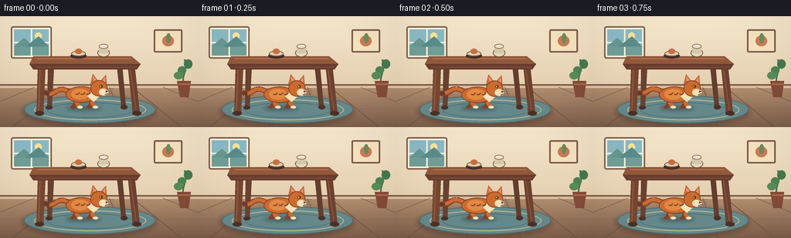
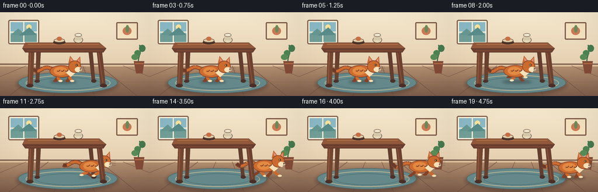

CODING AGENTS AS PIXEL WORLD MODELS
traex/GPT-5.6-Sol · dynamic_spatial_relationship_0016
点击播放 · 原生 RGB 像素
逐轮保存的候选
回放视频、检查图与代码变化。
每份候选均可单独播放。实际图片检查记录在下方工具轨迹中。
候选 01播放与检查图
点击播放 · 原生 RGB 像素


展开代码变化
--- 上一保存版本
+++ 本次保存版本
@@ -0,0 +1,263 @@
+from pathlib import Path
+import math
+
+import numpy as np
+from PIL import Image, ImageDraw, ImageFilter
+
+import artifact_io
+
+
+# Draw at 4x resolution and downsample for clean, softly illustrated edges.
+W, H, N = 256, 144, 20
+S = 4
+
+
+def sc(v):
+ if isinstance(v, (tuple, list)):
+ return tuple(int(round(x * S)) for x in v)
+ return int(round(v * S))
+
+
+def bezier_points(points, steps=24):
+ p0, p1, p2, p3 = points
+ out = []
+ for i in range(steps + 1):
+ t = i / steps
+ q = 1 - t
+ out.append((
+ (q**3 * p0[0] + 3*q*q*t*p1[0] + 3*q*t*t*p2[0] + t**3*p3[0]) * S,
+ (q**3 * p0[1] + 3*q*q*t*p1[1] + 3*q*t*t*p2[1] + t**3*p3[1]) * S,
+ ))
+ return out
+
+
+def background():
+ im = Image.new("RGB", (W*S, H*S))
+ pix = np.asarray(im).copy()
+ yy = np.arange(H*S)[:, None]
+ # Warm plaster wall and a slightly cooler wood floor.
+ wall_top = np.array([245, 232, 205], dtype=float)
+ wall_bottom = np.array([229, 207, 176], dtype=float)
+ t = np.minimum(yy / (91*S), 1.0)[..., None]
+ wall = wall_top*(1-t) + wall_bottom*t
+ pix[:] = wall.astype(np.uint8)
+ floor_y = 91*S
+ yf = np.maximum(yy-floor_y, 0) / ((H*S)-floor_y)
+ floor_top = np.array([177, 142, 111], dtype=float)
+ floor_bot = np.array([126, 94, 75], dtype=float)
+ floor = floor_top*(1-yf[..., None]) + floor_bot*yf[..., None]
+ pix[floor_y:] = floor[floor_y:].astype(np.uint8)
+ im = Image.fromarray(pix)
+ d = ImageDraw.Draw(im)
+
+ # Window, kept understated so the central action remains dominant.
+ d.rounded_rectangle(sc((14, 13, 67, 55)), radius=sc(3), fill=(255, 248, 224), outline=(132, 97, 78), width=sc(2))
+ d.rectangle(sc((18, 17, 63, 51)), fill=(138, 185, 197))
+ d.rectangle(sc((18, 38, 63, 51)), fill=(112, 157, 150))
+ d.ellipse(sc((45, 21, 54, 30)), fill=(252, 226, 150))
+ d.line(sc((40.5, 17, 40.5, 51)), fill=(248, 239, 214), width=sc(2))
+ d.line(sc((18, 34, 63, 34)), fill=(248, 239, 214), width=sc(2))
+ # A few distant hill shapes.
+ d.polygon([sc((18, 39)), sc((31, 28)), sc((44, 39))], fill=(103, 151, 145))
+ d.polygon([sc((32, 40)), sc((50, 26)), sc((63, 39))], fill=(89, 139, 137))
+
+ # Small wall art and plant add domestic context.
+ d.rounded_rectangle(sc((199, 17, 236, 47)), radius=sc(2), fill=(244, 225, 190), outline=(121, 87, 70), width=sc(2))
+ d.ellipse(sc((210, 25, 225, 39)), fill=(203, 122, 85))
+ d.ellipse(sc((215, 22, 221, 35)), fill=(107, 139, 91))
+
+ d.line(sc((0, 89, 256, 89)), fill=(117, 86, 68), width=sc(2))
+ d.line(sc((0, 92, 256, 92)), fill=(224, 194, 158), width=sc(2))
+ # Floor-board perspective and seams.
+ for x in (-80, 15, 92, 162, 235, 335):
+ d.line(sc((128 + (x-128)*0.40, 92, x, 144)), fill=(113, 83, 68), width=sc(.7))
+ d.line(sc((0, 120, 256, 120)), fill=(145, 108, 84), width=sc(.7))
+
+ # Pot plant at far right, behind the moving cat.
+ d.line(bezier_points(((237, 93), (235, 75), (244, 71), (239, 56)), 18), fill=(62, 112, 75), width=sc(2))
+ d.ellipse(sc((230, 65, 241, 75)), fill=(77, 130, 83))
+ d.ellipse(sc((238, 56, 249, 68)), fill=(69, 120, 76))
+ d.ellipse(sc((225, 72, 237, 82)), fill=(88, 139, 88))
+ d.polygon([sc((229, 84)), sc((247, 84)), sc((244, 105)), sc((233, 105))], fill=(130, 75, 56))
+ d.line(sc((231, 88, 246, 88)), fill=(178, 105, 70), width=sc(2))
+ return im
+
+
+BG = background()
+
+
+def draw_rug_and_table_rear(im):
+ d = ImageDraw.Draw(im)
+ # Rug and its soft contact shadow.
+ sh = Image.new("RGBA", im.size, (0, 0, 0, 0))
+ sd = ImageDraw.Draw(sh)
+ sd.ellipse(sc((28, 104, 203, 143)), fill=(39, 26, 23, 70))
+ sh = sh.filter(ImageFilter.GaussianBlur(sc(3)))
+ im.paste(sh, (0, 0), sh)
+ d.ellipse(sc((31, 103, 201, 139)), fill=(101, 137, 139), outline=(76, 109, 113), width=sc(1))
+ d.ellipse(sc((44, 108, 189, 135)), outline=(191, 183, 146), width=sc(1.3))
+ d.ellipse(sc((61, 112, 172, 132)), outline=(76, 112, 116), width=sc(1))
+
+ # Rear legs: visible behind the animal.
+ d.polygon([sc((62, 63)), sc((70, 63)), sc((67, 119)), sc((61, 119))], fill=(104, 65, 48))
+ d.polygon([sc((151, 63)), sc((158, 63)), sc((163, 118)), sc((157, 118))], fill=(99, 61, 46))
+ d.ellipse(sc((59, 116, 68, 121)), fill=(76, 49, 41))
+ d.ellipse(sc((156, 115, 165, 121)), fill=(76, 49, 41))
+
+
+def draw_table_front(im):
+ d = ImageDraw.Draw(im)
+ # Front legs pass in front of the cat, making the initial "under" relation explicit.
+ d.polygon([sc((49, 62)), sc((59, 62)), sc((56, 127)), sc((47, 127))], fill=(116, 70, 50))
+ d.polygon([sc((165, 62)), sc((174, 62)), sc((181, 127)), sc((172, 127))], fill=(108, 65, 48))
+ d.line(sc((52, 66, 50, 122)), fill=(150, 92, 61), width=sc(1.2))
+ d.line(sc((168, 66, 176, 121)), fill=(144, 85, 59), width=sc(1.2))
+ d.ellipse(sc((45, 123, 57, 129)), fill=(76, 48, 40))
+ d.ellipse(sc((171, 123, 183, 129)), fill=(74, 47, 39))
+
+ # Broad tabletop, with a clearly lit top plane and substantial apron.
+ d.polygon([sc((43, 52)), sc((170, 52)), sc((182, 62)), sc((38, 62))], fill=(145, 88, 59), outline=(80, 49, 40))
+ d.polygon([sc((38, 62)), sc((182, 62)), sc((177, 69)), sc((43, 69))], fill=(105, 62, 47), outline=(74, 44, 38))
+ d.line(sc((48, 55, 169, 55)), fill=(188, 124, 78), width=sc(1.1))
+ d.line(sc((46, 66, 176, 66)), fill=(133, 79, 55), width=sc(1))
+ # Small objects establish the upper surface without visual clutter.
+ d.ellipse(sc((91, 48, 112, 55)), fill=(71, 48, 42))
+ d.ellipse(sc((92, 45, 111, 52)), fill=(224, 207, 169), outline=(116, 79, 59), width=sc(1))
+ d.ellipse(sc((97, 42, 106, 49)), fill=(198, 111, 70))
+ d.ellipse(sc((126, 42, 142, 53)), fill=(230, 218, 186), outline=(104, 78, 63), width=sc(1))
+ d.rectangle(sc((128, 39, 140, 48)), fill=(213, 199, 169))
+ d.ellipse(sc((128, 36, 140, 42)), fill=(238, 228, 202), outline=(107, 78, 63), width=sc(.8))
+
+
+def cat_position(frame):
+ # Six readable establishing frames, an anticipatory crouch, then a smooth dash.
+ if frame <= 5:
+ return 108 + 0.35*math.sin(frame*1.1), 0.0, "idle"
+ if frame == 6:
+ return 106.5, 0.0, "crouch"
+ if frame <= 16:
+ t = (frame - 6) / 10.0
+ ease = t*t*(3 - 2*t)
+ return 106.5 + 104.5*ease, t, "run"
+ return 211 + .6*math.sin(frame), 1.0, "arrive"
+
+
+def draw_cat(im, frame):
+ cx, progress, state = cat_position(frame)
+ d = ImageDraw.Draw(im)
+ running = state == "run"
+ phase = (frame - 7) * math.pi * 0.92 if running else frame * .35
+ bob = (-1.2 + 1.1*math.cos(phase*2)) if running else .45*math.sin(frame*.8)
+ if state == "crouch":
+ bob = 2.2
+ cy = 101 + bob
+
+ # Shadow follows the cat and compresses slightly during airborne strides.
+ shadow = Image.new("RGBA", im.size, (0, 0, 0, 0))
+ sd = ImageDraw.Draw(shadow)
+ airborne = running and math.cos(phase*2) < -0.1
+ sw = 51 if running else 46
+ sd.ellipse(sc((cx-sw/2, 116.5, cx+sw/2, 122.5 if not airborne else 120.5)), fill=(40, 28, 24, 90 if not airborne else 55))
+ shadow = shadow.filter(ImageFilter.GaussianBlur(sc(2.2)))
+ im.paste(shadow, (0, 0), shadow)
+
+ fur = (205, 107, 47)
+ fur_light = (226, 137, 66)
+ fur_dark = (131, 66, 41)
+ cream = (250, 225, 184)
+ dark = (54, 43, 39)
+
+ # Tail is a lively cubic curve trailing to the left.
+ tail_wave = 5*math.sin(frame*.7)
+ tail_pts = bezier_points(((cx-19, cy-3), (cx-36, cy-13-tail_wave*.3),
+ (cx-39, cy+8-tail_wave), (cx-51, cy-3+tail_wave*.25)), 28)
+ d.line(tail_pts, fill=fur_dark, width=sc(7))
+ d.line(tail_pts, fill=fur, width=sc(4.5))
+ # Tail-tip accent.
+ d.line(tail_pts[-7:], fill=(105, 58, 42), width=sc(4.6))
+
+ # Legs are drawn behind the torso; profile gait switches every half-cycle.
+ hip_back = cx - 12
+ hip_front = cx + 11
+ if running:
+ stride = 11.5*math.sin(phase)
+ lift_a = max(0, -math.cos(phase))*4.5
+ lift_b = max(0, math.cos(phase))*4.5
+ legs = [
+ (hip_back, cy+6, hip_back-stride, 116-lift_a, fur_dark),
+ (hip_back+5, cy+7, hip_back+stride*.8, 117-lift_b, fur),
+ (hip_front-4, cy+7, hip_front-stride*.8, 117-lift_b, fur_dark),
+ (hip_front+2, cy+6, hip_front+stride, 116-lift_a, fur),
+ ]
+ elif state == "crouch":
+ legs = [(hip_back, cy+5, hip_back-8, 117, fur_dark), (hip_back+5, cy+6, hip_back+12, 117, fur),
+ (hip_front-3, cy+6, hip_front-8, 117, fur_dark), (hip_front+2, cy+5, hip_front+12, 117, fur)]
+ else:
+ legs = [(hip_back, cy+6, hip_back-2, 118, fur_dark), (hip_back+5, cy+6, hip_back+7, 118, fur),
+ (hip_front-3, cy+6, hip_front-4, 118, fur_dark), (hip_front+2, cy+6, hip_front+4, 118, fur)]
+ for hx, hy, px, py, col in legs:
+ knee_x = (hx+px)/2 + (3 if px < hx else -3)
+ knee_y = (hy+py)/2
+ d.line([sc((hx,hy)), sc((knee_x,knee_y)), sc((px,py))], fill=col, width=sc(5), joint="curve")
+ d.ellipse(sc((px-3, py-1.7, px+4, py+1.7)), fill=cream if col == fur else col)
+
+ # Torso and chest.
+ body_box = (cx-23, cy-10, cx+18, cy+11)
+ d.ellipse(sc(body_box), fill=fur, outline=fur_dark, width=sc(1.1))
+ d.ellipse(sc((cx-16, cy-7, cx+7, cy+7)), fill=fur_light)
+ d.polygon([sc((cx+11,cy-4)), sc((cx+21,cy+3)), sc((cx+13,cy+10)), sc((cx+5,cy+3))], fill=cream)
+ # Curved tabby marks on the body.
+ for ox in (-9, -2, 5):
+ d.arc(sc((cx+ox-4, cy-11, cx+ox+5, cy+1)), 30, 120, fill=fur_dark, width=sc(1.6))
+
+ # Head to the right, with pointed ears and readable face.
+ hx, hy = cx+19, cy-8
+ d.polygon([sc((hx-10,hy-5)), sc((hx-7,hy-18)), sc((hx+0,hy-9))], fill=fur, outline=fur_dark)
+ d.polygon([sc((hx+3,hy-9)), sc((hx+10,hy-17)), sc((hx+11,hy-3))], fill=fur, outline=fur_dark)
+ d.polygon([sc((hx-7,hy-15)), sc((hx-6,hy-9)), sc((hx-2,hy-10))], fill=(228, 147, 128))
+ d.polygon([sc((hx+6,hy-10)), sc((hx+9,hy-14)), sc((hx+9,hy-7))], fill=(228, 147, 128))
+ d.ellipse(sc((hx-10, hy-10, hx+12, hy+11)), fill=fur, outline=fur_dark, width=sc(1))
+ d.ellipse(sc((hx+1, hy+1, hx+13, hy+10)), fill=cream)
+ # Eye, nose, smile and whiskers point toward the destination.
+ d.ellipse(sc((hx+2, hy-4, hx+5.7, hy-.3)), fill=(245, 208, 89), outline=dark, width=sc(.7))
+ d.ellipse(sc((hx+4.1, hy-3.5, hx+5.0, hy-.7)), fill=dark)
+ d.polygon([sc((hx+10,hy+3)), sc((hx+13,hy+4.2)), sc((hx+10,hy+6))], fill=(105, 53, 53))
+ d.arc(sc((hx+6, hy+3, hx+12, hy+9)), 15, 95, fill=dark, width=sc(.7))
+ for wy in (2, 5, 8):
+ d.line(sc((hx+9,hy+wy, hx+20,hy+wy-1.5)), fill=(82, 66, 57), width=sc(.55))
+
+ # Gentle speed accents and dust only while crossing the table's right edge.
+ if running and progress > .28:
+ alpha_col = (118, 88, 72)
+ for j in range(2):
+ yy = cy - 4 + j*7
+ x2 = cx - 31 - j*4
+ d.line(sc((x2-9, yy, x2, yy)), fill=alpha_col, width=sc(.7))
+ if frame in (12, 14, 16):
+ d.ellipse(sc((cx-30, 116, cx-25, 120)), outline=(177, 148, 118), width=sc(1))
+ d.ellipse(sc((cx-37, 113, cx-33, 117)), outline=(177, 148, 118), width=sc(1))
+
+
+def make_frame(i):
+ im = BG.copy()
+ draw_rug_and_table_rear(im)
+ draw_cat(im, i)
+ draw_table_front(im)
+ # Tiny warm vignette unifies the scene.
+ arr = np.asarray(im).astype(np.float32)
+ y, x = np.mgrid[0:H*S, 0:W*S]
+ rr = ((x-W*S/2)/(W*S*.73))**2 + ((y-H*S/2)/(H*S*.82))**2
+ shade = np.clip(1 - .10*np.maximum(rr-.28, 0), .87, 1.0)[...,None]
+ arr *= shade
+ im = Image.fromarray(np.uint8(np.clip(arr, 0, 255)))
+ im = im.resize((W, H), Image.Resampling.LANCZOS)
+ return np.asarray(im, dtype=np.uint8)
+
+
+def main():
+ frames = np.stack([make_frame(i) for i in range(N)], axis=0)
+ artifact_io.save(frames, Path(__file__).resolve().parent)
+
+
+if __name__ == "__main__":
+ main()
可观测工具轨迹
实际执行的命令与返回图片。
命令 1exit 0
/bin/bash -lc "cat prompt.txt && printf '\\n--- GENERATION_RULES ---\\n' && cat GENERATION_RULES.md && printf '\\n--- TASK_SPEC ---\\n' && cat task_spec.json"
命令 2exit 0
/bin/bash -lc "find . -maxdepth 3 -type f -printf '%p\\n' | sort && printf '\\n--- tools ---\\n' && command -v ffmpeg && command -v python3 && command -v convert || true"
命令 3exit 0
/bin/bash -lc 'cat artifact_io.py'
命令 4exit 0
/bin/bash -lc "python3 generate.py && python3 - <<'PY'
import numpy as np
from PIL import Image
z=np.load('pixels.npz')['pixels']
print('packed tensor',z.shape,z.dtype,'unique frame checks', [len(np.unique(z[:,:,i])) for i in (0,5,8,12,16,19)])
print('outputs:',__import__('os').path.getsize('pixels.npz'), 'bytes')
PY"视觉工具实际返回图片 1

保存候选 1 份；完成命令 4 次；可验证图片返回 1 张。原始 API 响应与完整日志保留在本地。